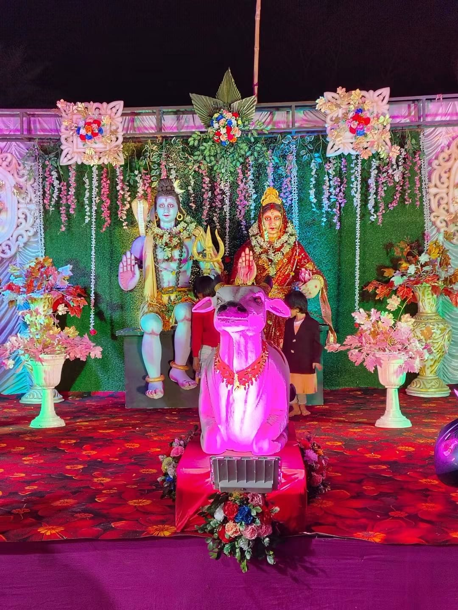

Faith • Devotion • Tradition
A place where faith, devotion and tradition come together.

Chatan Shiv Kali Mandir is a sacred and peaceful shrine located in Raghunathpur, dedicated to the worship of Lord Shiva and Maa Kali.
Managed and served by the Chatan Shiv Kali Mandir Committee (Established in 1965), the temple brings devotees together in prayer, quiet meditation, and long-standing devotional traditions.
The temple stands as a spiritual home for families and visitors across the region, welcoming everyone with warmth, peace, and sacred blessings.
Daily worship rituals conducted at the temple for the peace and wellbeing of all devotees.
The temple celebrates Mahashivaratri and Kali Puja with utmost devotion, grandeur, and community joy.

Annual CelebrationMahashivaratri is celebrated with devotion, special worship and a spiritual atmosphere at the temple. Devotees participate in continuous abhishekam, sacred havan rituals, and night-long prayers.
 Deepawali Festival
Deepawali Festival
Kali Puja brings devotees and the local community together in an atmosphere of devotion and celebration. The temple is illuminated with deepams and flowers, featuring midnight archana and community offerings.
আমাদের মন্দির, পূজা ও উৎসবের কিছু বিশেষ মুহূর্ত


We warmly welcome all devotees to visit Chatan Shiv Kali Mandir and receive divine blessings.
Chatan Shiv Kali Mandir
Raghunathpur, Ward No. 13
Purulia, West Bengal
PIN – 723133, India
Chatan Shiv Kali Mandir Committee
Contact Person: Rudra Prasud Bhakat
Rudra Prasud Bhakat
Tap number to call directly from mobile
Raghunathpur, Ward No. 13, Purulia, West Bengal – 723133
Stay connected with our official Facebook page for live updates, festival photos, and community announcements.
Facebook পেজ দেখুন ↗